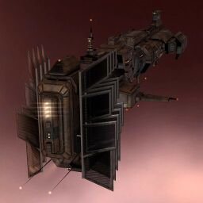

Cyclone

Тип корабля: Линейный крейсер
Государство/Организация: Minmatar
Примерная стоимость: 52.100.000 ISK
Описание
Крейсер типа «Сайклон» был разработан в ответ на необходимость создать корабль, достаточно мощный для усиления эскадрилий фрегатов, но при этом обладающий большей маневренностью, чем линейные корабли. Уверенно справляться с поставленной перед ними задачей «сайклонам» помогают мощный двигатель и семь разъёмов для установки модулей большой мощности.
Характеристики
Корпус
Запас прочности корпуса: 3.750 ед.
Вместимость грузового отсека: 450 м^3
Объем отсека для дронов: 50 м^3
Пропускная способность канала телеуправления: 50 Мбит/с
Масса: 12.400.000 кг
Занимает объем: 216.000,0 м^3 (15.000,0 м^3 в разобранном виде)
Влияние инертности конструкции: 0,68x
Сопротивление корпуса ЭМ-урону: 33 %
Сопротивление корпуса термальному урону: 33 %
Сопротивление корпуса кинетическому урону: 33 %
Сопротивление корпуса фугасному урону: 33 %
Броня
Запас прочности брони: 3.750 ед.
Сопротивление брони ЭМ-урону: 60 %
Сопротивление брони термальному урону: 35 %
Сопротивление брони кинетическому урону: 25 %
Сопротивление брони фугасному урону: 10 %
Щит
Запас прочности щита: 5.250 ед.
Влияние на время регенерации щитов: 23 минут и 20 секунд
Сопротивление щита ЭМ-урону: 0 %
Сопротивление щита термальному урону: 20 %
Сопротивление щита кинетическому урону: 40 %
Сопротивление щита фугасному урону: 50 %
Сопротивление средствам РЭП
Сопротивление накопителя нейтрализирующему воздействию: 0 %
Сопротивление воздействию генератору стазис-поля: 0 %
Сопротивление воздействию помех на наводку вооружения: 0 %
Накопитель энергии
Емкость накопителя: 2.900,0 ГДж
Время востановления заряда: 12 минут и 5 секунд
Целеуказания
Максимальная дальность захвата цели: 50 км
Максимальное количество захваченных целей: 6
Радиус сигнатуры: 250 м
Разрешающая способность систем захвата цели: 220 мм
Эффективность радарной системы: -
Эффективность магнитнометрической системы: -
Эффективность гравиметрической системы: -
Эффективность ладарной системы: 17 ед.
Двигательная установка
Максимальная скорость: 180 м/с
Скорость в варп-режиме: 3,5 а.е./с.
Служба оснащения
Мощность ЦПУ: 550,0 Тф
Мощность реактора: 1.100 МВт
Калибровка: 400 ед.
Точки монтажа орудийных установок: 2
Точки монтажа пусковых установок: 5
Разъемы большой мощности: 7
Разъемы средней мощности: 5
Разъемы малой мощности: 5
Разъемы под установку тюнинг-модулей: 3